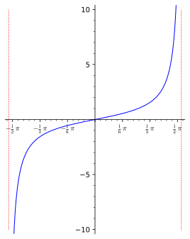

Use the derivative to investigate optimization questions.
Understand the extreme value theorem in the context of optimization.
Define absolute and local maximum and minimum values of a function on a given set \(D\text{.}\)
Identify extreme values of a function graphically.
Introduce the notion of critical points as potential inputs where a function attains a local (or absolute) maximum or minimum.
Develop a procedure that determines the absolute maximum and minimum values of a continuous function on a closed finite interval.
In our remaining lessons, we will frequently take up what are called optimization questions. Roughly speaking, these are questions related to the maximum and minimum values of a function on a given set. Optimization problems are naturally important in modeling situations: when modeling a quantity \(q\) as a function \(q=f(s)\) of some other quantity \(s\text{,}\) we naturally are interested in knowing whether it attains a maximal or minimal value, what that maximal or minimal value is (if it exists), and which inputs \(s\) produces this value. The extreme value theorem represents a wonderfully straightforward to this first flavor of optimization problem: it tells us that if \(f\) is continuous on the closed interval \([a,b]\text{,}\) then there is guaranteed to be both a maximal and minimal value. A shortcoming of this theorem is that it gives no indication of what exactly these maximum/minimum values are (or how to find them)! We amend this situation in Procedure 20.13.
The statement of the extreme value theorem involves the notion of an absolute maximum/minimum value of a function \(f\) on a given set \(D\text{.}\) Imagining this is intuitively clear to the reader, we launch straight into a discussion of the extreme value theorem. Afterward, we give precise definitions both for absolute and local maximum and minimum values. If you would like to see those definitions first, see Definition 20.6.
Theorem20.1.Extreme value theorem.
If \(f\) is continuous on the closed interval \(I=[a,b]\text{,}\) then there are inputs \(c\) and \(d\) for which \(f(c)\) is the absolute maximum value of \(f\) on \(I\) and \(f(d)\) is the absolute minimum value of \(f\) on \(I\text{.}\) In plain English: a continuous function always attains a maximum and minimum value over a closed interval \([a,b]\text{.}\)
Proof.
The proof of this intuitive statement is just beyond our reach in terms of our current conceptual framework: we are missing only the notion of least upper bounds. In later math courses, like real analysis and topology, you develop an exceedingly important concept called compactness that allows you to eventually give a beautiful one-line proof of the extreme value theorem.
Although we do not give an actual proof the extreme value theorem, you can catch a glimmer of its truth by treating it graphically. Try the following: pick an interval \([a,b]\) in the \(xy\)-plane; pick endpoint values \(f(a)\) and \(f(b)\) for an arbitrary function \(f\) and graph the corresponding points; now trace out the rest of the graph of your arbitrary \(f\text{,}\) making it as wildly behaved as you like, but with the restriction that you pencil never leaves the paper (\(f\) is continuous) and the start and end values are \(f(a)\) and \(f(b)\text{.}\) You will see that now matter what function you end up sketching, it will always have reach a well-defined highest point (corresponding to the maximum value) and a well-defined lowest point (corresponding to the minimum value). The restriction that we cannot lift our pencil prevents our graph from going arbitrarily high (or low), or from getting arbitrarily close to a highest point but not actually hitting it.
Perhaps a more illustrative means of understanding the role of continuity in the extreme value theorem is to consider examples where this condition is removed.
Example20.2.Extreme values: discontinuous.
The functions \(f\) and \(g\) graphed below illustrate how crucial continuity is to the extreme value theorem.
(a)Graph of \(f\)
(b)Graph of \(g\)
Figure20.3.Extreme values and discontinuous functions
The function \(f\) has infinite one-sided limits at \(2\text{,}\) and as a consequence has neither a maximum nor a minimum value on the closed interval \([1,3]\text{.}\)
The function \(g\) has values that get arbitrarily close to but not equal to \(5\text{,}\) thanks to the removable discontinuity. As a result, \(g\) has no maximum value on the interval: we have \(g(x)< 5\) for all \(x\in [1,3]\text{,}\) and for any value \(L\) less than \(5\text{,}\) there is an input \(c\in [1,3]\) with \(g(c)> L\text{.}\)
Example20.4.Extreme values: open interval.
As illustrated below, the function \(f(x)=\tan x\) has no absolute maximum or minimum value on the open interval \((-\pi/2, \pi/2)\text{.}\) This illustrates why the extreme value theorem insists that the finite interval in question must be closed.

Figure20.5.Graph of \(f(x)=\tan x\)
Definition20.6.Extreme values.
Assume \(f\) is defined on the set \(D\subseteq \mathbb{R}\text{,}\) and let \(a\) be an element of \(D\text{.}\)
\(f(a)\) is an absolute maximum value of \(f\) on \(D\) if \(f(a)\geq f(x)\) for all \(x\in D\text{.}\)
\(f(a)\) is an absolute minimum value of \(f\) on \(D\) if \(f(a)\leq f(x)\) for all \(x\in D\text{.}\)
\(f(a)\) is a local maximum value of \(f\) on \(D\) if \(f(a)\geq f(x)\) for all \(x\in D\) sufficiently close to \(a\text{.}\)
\(f(a)\) is a local minimum value of \(f\) on \(D\) if \(f(a)\leq f(x)\) for all \(x\in D\) sufficiently close to \(a\text{.}\)
\(f(a)\) is an extreme value of \(f\) on \(D\) if it is an absolute or local maximum or minimum value of \(f\) on \(D\text{.}\)
Remark20.7.Absolute max/min implies local max/min.
Assume \(f\) is defined on an interval \(I\text{.}\) Observer that as pure logical consequence of the definitions, if \(f(a)\) is an absolute maximum or minimum value of \(f\) on \(I\text{,}\) then it is also a local maximum or minimum value of \(f\) on \(I\text{.}\) Indeed, if \(f(a)\geq f(x)\) (resp. \(f(a)\leq f(x)\)) for all\(x\in I\text{,}\) then the inequality certainly holds for all \(x\in I\)sufficiently close to \(a\text{.}\)
Remark20.8.Local extreme values.
In Definition 20.6 the phrase “sufficiently close to \(a\)” is used as a convenient, but slightly less than rigorous shorthand. To be more precise in this definition we treat interior and endpoints of the set \(D\) separately.
Given an interior point \(a\in D\text{,}\) we say that \(f(a)\) is a local maximum (resp., minimum) value of \(f\) on \(D\) if there is an open interval \(I=(c,d)\subseteq D\) containing \(a\) such that \(f(a)\) is an absolute maximum (resp., minimum) value on \(I\text{.}\)
Similarly, if \(a\) is a left (resp., right) endpoint of \(D\text{,}\) then \(f(a)\) is a local maximum (resp., minimum) value of \(f\) on \(D\) if there is a half-open interval \(I=[a,c)\) (resp., \(I=(c,a]\)) contained in \(D\) such that \(f(a)\) is an absolute maximum (resp., minimum) value on \(I\text{.}\)
In summary, for \(f(a)\) to be a local maximum or minimum value on \(D\) means simply that there is some interval (or half-interval in the endpoint case) \(I\) contained in \(D\) on which \(f(a)\) is an absolute maximum or minimum value. Thus to identify graphically the local extreme values of a function \(f\text{,}\) look for inputs \(a\) such that when we restrict our gaze to the segment of the graph of \(f\) lying over a small interval around \(a\text{,}\)\(f(a)\) is seen to be an absolute maximum or minimum value.
Example20.9.Local and absolute extreme values.
A graph of the function \(f\) on the interval \(I=[-4,4]\) is graphed below.
Identify all and any inputs \(a\) where \(f(a)\) has a local maximum or minimum value of \(f\) on \(I\text{.}\)
Decide whether \(f\) has an absolute maximum value on \(I\text{,}\) and whether \(f\) has an absolute minimum value on \(I\text{.}\)
Figure20.10.Graph of \(f\)
Solution.
The function \(f\) has a local maximum value at the left endpoint \(a=-4\text{:}\) indeed, we have \(2=f(-4)\geq f(x)\) for all \(x\in [-4,-3)\) (thus for all \(x\) sufficiently close to \(-4\)). The value \(f(4)\) at the right endpoint, somewhat surprisingly, is also a local max: for all \(x\in (3,4]\) we have \(-2=f(4)\geq f(x)\text{.}\)
Additionally, we see that \(-1=f(-1)\) is a local minimum value of \(f\text{,}\) since \(f(-1)\leq f(x)\) for all \(x\in (-2,0)\text{.}\) Finally, \(f(1)=3\) is easily seen to be the absolute maximum value of \(f\) on \([-4,4]\text{.}\) It follows from Remark 20.7 that \(f(1)\) is also a local minimum value of \(f\) on \(I\)
We have already observed that \(3=f(1)\) is the absolute maximum value of \(f\) on \(I\text{.}\) We claim that there is no absolute minimum value. To see why, first note that \(f(x)> -4\) for all \(x\in I\text{.}\) Thus, if \(L\) were an absolute minimum value of \(f\) on \(I\) we would have \(L> -4\text{.}\) However, since \(\lim_{x\to 4^+}f(x)=-4\text{,}\) for any \(L> 4\text{,}\) we can find an \(x\in I\) such that
It follows that \(f\) has no absolute minimum value on \(I\text{.}\)
Theorem20.11(Fermat).Critical points and extreme values.
Assume \(f\) is defined on \(D\) and that \(a\) is an interior point of \(D\text{.}\) If \(f(a)\) is a local maximum or minimum value of \(f\) on \(D\text{,}\) and if \(f\) is differentiable at \(a\text{,}\) then \(f'(a)=0\text{.}\)
Proof.
We will show that if \(f(a)\) is a local maximum value of \(f\) on \(D\) and \(f\) is differentiable at \(a\text{,}\) then \(f'(a)=0\text{.}\) The argument for the case where \(f(a)\) is a local minimum is exactly similar.
Firstly, since \(f(a)\) is assumed to be a local maximum value, we can find an interval \((c,d)\subseteq D\) containing \(a\) such that \(f(a)\geq f(x)\) for all \(x\in (c,d)\text{.}\)
Next, since \(f\) is differentiable at \(a\text{,}\) the limit
\begin{equation*}
f'(a)=\lim\limits_{x\to a^-}\frac{f(x)-f(a)}{x-a} \text{ and } f'(a)=\lim\limits_{x\to a^+}\frac{f(x)-f(a)}{x-a}\text{.}
\end{equation*}
Next, since \(f(x)\leq f(a)\) for all \(x\) sufficiently close to \(a\) (more precisely, for all \(x\in (c,d)\)), \(f(x)-f(a)\leq 0\) for all \(x\) sufficiently close to \(a\text{.}\) It follows that
\begin{align*}
\frac{f(x)-f(a)}{x-a} \amp \geq 0 \ \text{ as } x\to a^- \amp (x< a \implies x-a< 0) \\
\frac{f(x)-f(a)}{x-a} \amp \leq 0 \ \text{ as } x\to a^+ \amp (x> a \implies x-a> 0) \text{,}
\end{align*}
Since \(0\leq f'(a)\leq 0\text{,}\) we conclude that \(f'(a)=0\text{,}\) as desired.
According to Theorem 20.11, points \(a\) where either \(f\) is not differentiable, or where \(f'(a)=0\) are important to us, as these are candidates where the value \(f(a)\) is potentially a local maximum or minimum. Accordingly, we give such inputs a special name: critical points.
Definition20.12.Critical point.
Let \(f\) be defined on \(D\text{.}\) An element \(a\in D\) is a critical point of \(f\) if either \(f'(a)=0\) or \(f\) is not differentiable at \(a\text{.}\)
Let us now do some synthesis of the above theory. Assume \(f\) is continuous on the closed interval \(I=[a,b]\text{.}\)
According to Theorem 20.1 there are inputs \(c\) and \(d\) in \(I\) where \(f\) attains its absolute maximum and minimum values, respectively.
In particular, \(f(c)\) and \(f(d)\) are local extreme values of the function.
According to Theorem 20.11, if \(c\) and \(d\) are interior points of \(I\text{,}\) then they must be critical points of \(f\text{:}\) i.e., \(f\) is either not differentiable at there, or \(f'\) is equal to zero there.
We conclude that the inputs \(c\) and \(d\) where \(f\) attains its absolute extreme values are either one of the endpoints, \(a\) or \(b\) of the interval, or one of the critical points of \(f\) in the interior \((a,b)\) of the interval.
Our synthesis gives rise to the following procedure for finding the absolute extreme values of a continuous function on a closed interval.
Procedure20.13.Extreme value theorem.
Assume \(f\) is continuous on the closed interval \(I=[a,b]\text{.}\) To determine the absolute maximum and minimum values of \(f\) on \(I\text{,}\) proceed as follows.
Identify candidate inputs.
The candidate inputs where \(f\) potentially attains a maximum or minimum value consist of (i) the endpoints \(a\) and \(b\) of the interval \(I\) along with the set of all critical points of \(f\) lying in \((a,b)\text{.}\) We determine the latter by finding all solutions to the equation
\begin{equation}
f'(x)=0\tag{20.1}
\end{equation}
lying in \((a,b)\text{,}\) and identifying all elements of \((a,b)\) where \(f\) is not differentiable.
Evaluate \(f\).
Evaluate \(f\) at all candidate inputs you found in Step 1.
Compare values.
Compare the values of \(f\) computed in Step 2. The maximum value in that set is the absolute maximum value of \(f\) on \(I\text{;}\) the minimum value in that set is the minimum value of \(f\) on \(I\text{.}\)
Example20.14.Extreme values: factored polynomial.
Let \(f(x)=(x-2)^5(x-3)^5\text{.}\) Find the absolute maximum and minimum values of \(f\) on the interval \(I=[0,4]\text{.}\)
Comparing these values, we conclude that \(f(0)=2^5\cdot 3^5\) is the absolute maximum value of \(f\) on \(I\text{,}\) and \(f(5/2)=-1/2^{10}\) is the absolute minimum value of \(f\) on \(I\text{.}\)
Example20.15.Extreme values: trig.
Let \(f(x)=x+2\cos x\text{.}\) Find the absolute maximum and minimum values of \(f\) on the interval \(I=[0,2\pi]\text{.}\)
Solution.
The function \(f\) is easily seen to be differentiable everywhere, with \(f'(x)=1-2\sin x\text{.}\) To find critical points, we solve:
\begin{align*}
f'(x) \amp =0\\
1-2\sin x \amp = 0\\
\sin x \amp = \frac{1}{2}\text{.}
\end{align*}
Reactivating our trig expertise, we realize that the solutions to the last equation come in two infinite lists:
\begin{align*}
x \amp = \frac{\pi}{6}+2\pi n, \hspace{10pt} n \in \Z\\
x \amp= \frac{5\pi}{6}+2\pi n, \hspace{10pt} n \in \Z \text{.}
\end{align*}
Thus the solutions lying in the interior \((0,2\pi)\) of the given interval are
and thus that \(f(5\pi/6)=5\pi/6-\sqrt{3}\) is the absolute minimum value of \(f\) on \(I\text{,}\) and \(f(2\pi)=2\pi+2\) is the absolute maximum value of \(f\) on \(I\text{.}\) Below you find a graph of \(f\) that bears out our analysis.
Example20.16.Distance between graphs.
Let \(f(x)=\sqrt[3]{x}\) and \(g(x)=3x\text{.}\) Find the maximum vertical distance between the graphs of \(f\) and \(g\) on the interval \(I=\left[-\frac{1}{\sqrt{27}}, \frac{1}{\sqrt{27}}\right]\)
Solution.
The vertical distance point \((x,f(x))\) and \((x,g(x))\) on the two graphs is measured by \(\abs{f(x)-g(x)}\text{.}\) Thus we are interested in the extreme values of \(h(x)=f(x)-g(x)\) on the interval \(I\text{.}\) For \(x\ne 0\) we have
We conclude that \(-\frac{2}{9}\leq h(x)\leq \frac{2}{9}\) on \(I\text{,}\) or equivalently, \(\abs{f(x)-g(x)}\leq \frac{2}{9}\text{.}\) Thus the vertical maximal distance between the two graphs is \(2/9\) and this occurs at the inputs \(x=\pm 1/27\text{.}\) Below you find two diagrams that illustrate this result: the first depitcts the graphs of \(f\) and \(g\) separately, and the second is a graph of the difference function \(h(x)=f(x)-g(x)\text{.}\)